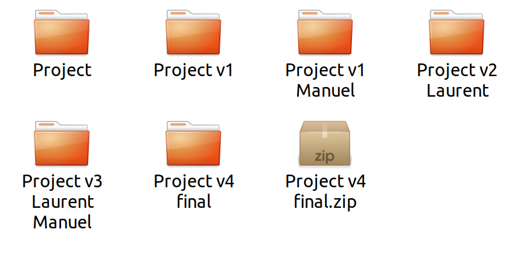
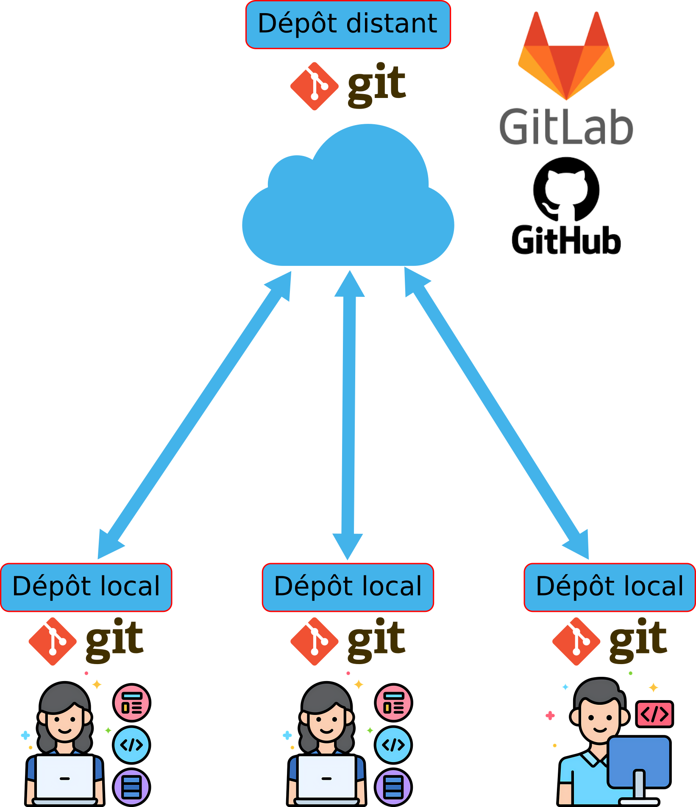
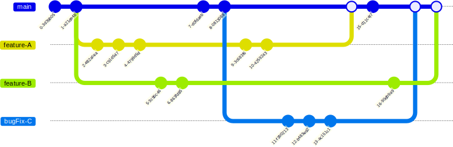

Introduction au versionning avec git
Git est un logiciel de gestion de versions décentralisé. C’est un logiciel libre créé par Linus Torvalds, le créateur de Linux. Il permet de suivre l’évolution d’un projet informatique en enregistrant les différentes versions des fichiers qui le composent. Git est très utilisé dans le monde du développement logiciel, mais il peut également être utilisé pour suivre l’évolution de tout type de fichier.
Pourquoi un système de gestion de versions ?
Les projets informatiques évoluent constamment. Il est donc important de pouvoir suivre les modifications apportées aux fichiers du projet, de revenir à des versions précédentes si nécessaire, et de collaborer efficacement avec d’autres développeurs. Un système de gestion de versions comme git permet de répondre à ces besoins.
Souvent les personnes utilisent des copies avec des noms différents pour gérer les versions de leurs fichiers, mais cette méthode est peu pratique et sujette aux erreurs. Git permet de gérer les versions de manière beaucoup plus efficace et sécurisée.


Une méthode de versionnage obsolète

Les ordinateurs peuvent tomber en panne, être perdus et faire perdre des données si elles ne sont pas correctement sauvegardées.
Les méthodes à proscrire à l’ère du versionnage avec git :
Utiliser des copies multiples avec des noms différents pour gérer les versions des fichiers (zippé ou non)
Le mail
Les drives (google drive, dropbox, etc.)
❌ |


Git permet de travailler à plusieurs
Travailler à plusieurs implique:
- 👉 Travailler en parallèle sur
Des éléments distincts (synchronisation)
Les mêmes éléments (divergences, conflits)
Git + CI/CD fournit des outils puissants pour régler ces problèmes.
Git est un système de gestion de versions (VCS, Version Control System en anglais). Il permet de conserver un historique des modifications effectuées sur un projet et de maintenir des versions concurrentes de manière distribuée et synchronisée.
Identifier les modifications (quelles lignes, quand, quel auteur, commentaires, lien avec un bug, une feature)
Revenir à une version donnée
Versions de référence disponibles sur une plateforme partagée (en-ligne)
Travailler à plusieurs et en même temps
Mécanismes pour identifier et résoudre les conflits
Les plateformes de gestion de versions en ligne, comme GitHub, GitLab ou Bitbucket, permettent de centraliser les dépôts git et la collaboration entre plusieurs développeurs.
✅ |


Ces plateforme contiennent ce que l’on appelle le dépôt distant et la référence de code.


Elles permettent de:
Exécuter les tests d’intégration automatique
Créer la documentation
Publier la documentation officielle
Les développeurs eux:
Travaillent sur le code localement
Poussent leurs modifications vers le dépôt distant en proposant des changements (pull request)
Récupèrent les modifications des autres développeurs depuis le dépôt distant
Note
Différence entre Git & GitHub
Git : logiciel de gestion de version distribué
GitHub, GitLab, … : plateformes/serveurs d’hébergement de code source, collaboratives, web, serveurs d’exécutions pour les tests, production de la documentation, gestion de sécurité.
GitHub et GitLab contiennent le même logiciel git que celui utilisé en local.
NB: on peut avoir 2 repos git en local et pusher de l’un sur l’autre
Les commits
Un commit est un enregistrement des modifications apportées à votre dépôt git. Il permet de conserver un historique des changements et de revenir à une version précédente si nécessaire.
RÈGLE D’OR : chaque commit doit représenter un changement cohérent et significatif dans le projet. La modification doit être atomique pour que l’historique des commits reste clair et compréhensible et ne doit donc porter que sur un aspect précis du projet.
Par exemple:
on ne mélange pas les modifications de code avec les traductions de la documentation. On va faire 2 commits distincts pour cela.
on peut changer documentation et code en même temps, mais que si le changement de documentation correspond directement au changement de code.
Quels sont les fichiers à committer ?
C’est-à-dire les fichiers que l’on souhaite faire suivre par Git.
✅ |
❌ |
Fichiers texte :
Fichiers binaires de petite taille :
|
|
Les branches
Les branches stockent des versions différentes et parallèle de votre projet au sein du même dépôt git.
Elles permettent de travailler sur des fonctionnalités ou des corrections de bugs de manière isolée, sans affecter la branche principale (souvent appelée main ou master).
Ainsi on a:
La branche principale (souvent appelée
mainoumaster) qui contient une version de référence: la branche «main» utilisable (stable)Différentes versions pour différents contextes: les releases (types d’Os, de matériel -arm, intel, carte graphiques différentes etc. -, ainsi que différentes versions du projet)
Une branche de développement principale (souvent appelée
rollingou``dev``) où les nouvelles fonctionnalités et corrections de bugs sont intégrées avant d’être fusionnées dans la branche principale.

Les différentes branches coexistent dans le dépôt git et sont utilisées pour organiser le développement du projet.
Pour que l’historique soit utilisable:
On ne commit jamais dans la branche principale directement. Les modifications doivent passer par une branche de développement ou une branche spécifique à une fonctionnalité.
Les branches de développement ou spécifiques à une fonctionnalité doivent être fusionnées dans la branche principale uniquement après avoir été testées et validées. Cette fusion se fait via une pull request qui si elle est acceptée est effectuée avec une commande de type
git merge.
Avoir un historique clair est fondamental, en pratique, on va souvent nettoyer l’historique lors du merge des branches en faisant un merge spécifique appelé squash merge. Cela permet de regrouper tous les commits d’une branche en un seul commit avant de l’intégrer dans la branche principale.
Exemple:
git checkout -b feature-branch
# Effectuez des modifications dans votre projet
git add optimize.cpp
git commit -m "[feat] new optimization feature 1"
# Oups vous avez fait une erreur, vous la corrigez
git add optimize.cpp
git commit -m "[fix] fixe termination condition in optimize.cpp"
git checkout main
git merge --squash feature-branch
git commit -m "[feat] new optimization feature 1"
Ainsi vous conservez un historique clair et lisible dans la branche principale, en regroupant tous les commits liés à une fonctionnalité en un seul commit et sans les péripéties intermédiaires.
La description ci-dessus est pour une utilisation locale, mais comme vous ne devriez jamais pousser des commits sur la branche principale, vous le ferez la plupart du temps sur les plateformes GitHub ou GitLab via des pull requests, dans ce cas:
GitHub : au moment de valider la PR, cliquez sur la flèche du bouton vert
Mergeet sélectionnezSquash and merge.GitLab : cochez la case
Squash commitsdans les options de la Merge Request avant de cliquer surMerge.
Note
Git est souvent aussi utilisé comme un sauvegarde temporaire de votre travail, c’est normal, pour cela préfixez vos commit de sauvegarde avec [WIP] pour indiquer qu’il s’agit d’un travail en cours (Work In Progress).
Souvent les plateformes n’effectuent pas de vérification stricte sur les commits marqués comme [WIP] et vous permettent de les pousser sur le dépôt distant sans problème.
Vous pouvez supprimez ces commits de l’historique de votre branche en utilisant la commande``git squash``.
Conventions de nommage, numérotation, de versions
Choisir une convention de nommage cohérente est essentiel pour la lisibilité et la maintenabilité d’un projet, en particulier lorsque plusieurs langages de programmation coexistent, comme c’est le cas ici avec Python et C++ dans l’écosystème ROS2.
Il existe plusieurs conventions de casse (« case » en anglais), c’est-à-dire des manières de séparer les mots qui composent un nom :
snake_case: tous les mots sont en minuscules, séparés par des underscores (_). Exemple :maximum_velocity,compute_jacobian.camelCase(ou lower camel case) : le premier mot commence par une minuscule, chaque mot suivant commence par une majuscule, sans séparateur. Exemple :maximumVelocity,computeJacobian.PascalCase(ou upper camel case, souvent appelé simplementCamelCase) : identique au camelCase, mais le premier mot commence également par une majuscule. Exemple :RobotController,JointState.SCREAMING_SNAKE_CASE: identique au snake_case, mais tout en majuscules. Utilisé pour les constantes. Exemple :MAX_VELOCITY.kebab-case: identique au snake_case, mais les mots sont séparés par des tirets (-). Peu utilisé dans le code lui-même (le tiret est souvent un opérateur), mais fréquent pour les noms de fichiers, de dépôts ou d’URL. Exemple :mon-super-projet.
Ce cours retient la convention recommandée par défaut en Python (PEP 8) qui est aussi celle adoptée par la plupart des guides de style C++ utilisés en robotique (dont le guide de style de ROS2). Elle a l’avantage d’être identique dans les deux langages, ce qui facilite le passage de l’un à l’autre :
PascalCasepour tout ce qui désigne un type : classes, structures, enums, alias de types.snake_casepour tout ce qui désigne un comportement ou une donnée : fonctions, méthodes, variables, paramètres, champs/attributs, modules Python, espaces de noms (namespaces) C++, paquets.SCREAMING_SNAKE_CASEpour les constantes et les macros.
Nommage de fichiers
Les noms de fichiers sont en
snake_caseet en minuscules :robot_controller.cpp,joint_state_publisher.py. Cela évite les problèmes de sensibilité à la casse, qui diffère suivant les systèmes de fichiers (Linux est sensible à la casse, Windows et MacOS ne le sont pas par défaut).On évite les espaces, les accents et les caractères spéciaux dans les noms de fichiers, qui peuvent poser des soucis suivant les terminaux, scripts ou outils de compilation utilisés.
En C++, un fichier d’en-tête et son fichier source définissent généralement une seule classe principale, dont le nom en
PascalCaseest converti ensnake_casepour nommer les fichiers. Par exemple la classeRobotControllerest déclarée dansrobot_controller.hppet définie dansrobot_controller.cpp.En Python, un module qui définit une seule classe principale suit la même règle : le module
robot_controller.pycontient la classeRobotController.
Nommage des variables, fonctions, classes, méthodes et champs
Élément |
Convention |
Exemple |
|---|---|---|
Classe, structure, enum, type |
|
|
Fonction, méthode |
|
|
Variable, paramètre, champ/attribut |
|
|
Constante, macro |
|
|
Module (Python), espace de noms (C++), paquet |
|
|
Quelques précisions complémentaires :
En C++, il est courant de suffixer les attributs privés d’une classe par un underscore final (ex :
velocity_) afin de les distinguer visuellement des variables locales et des paramètres de fonction.
On peut aussi utiliser un préfixe m_ pour les attributs membres privés (ex : m_velocity) afin de les distinguer des variables locales et des paramètres de fonction.
* Python n’a pas de véritables membres privés : par convention, on préfixe par un underscore (_velocity) pour indiquer un usage interne à la classe ou au module, l’usage du double underscore (__velocity) étant réservé aux cas où l’on souhaite explicitement activer le name mangling.
* Un nom doit rester court mais explicite : il vaut mieux joint_velocity que jv ou que the_velocity_of_the_joint_in_radian_per_second.
Nommage des versions
Utiliser la convention SemVer:
MAJEUR.MINEUR.CORRECTIF
* MAJEUR → rupture de compatibilité (API)
* MINEUR → ajout compatible (Features)
* CORRECTIF → correction de bug
Liens pour la doc: https://semver.org/lang/fr/
Nommage des commits
<type de commit>:[<scope>] description du commit
[optional body]
[optional footer(s)]
* feat: nouvelle fonctionnalité
* fix: correction de bug
* BREAKING CHANGE: changement API
* docs: documentation
* refactor: refactorisation
* test: tests
* build: build / dépendances
* ci: intégration continue
* chore: maintenance diverse
Nommage des branches
feature/<description-courte> : ajout d’une fonctionnalité
fix/<description-courte> : ajout d’un correctif
release/<version> : version du logiciel correspondant à un env. donné (API,matériel, OS, etc.)
chore/<description-courte> : maintenance sans impact sur l’api, les features, ou un bug
docs/<description-courte> : ajout d’éléments de documentation
hotfix/<description-courte> : ajout d’un correctif urgent
Identifier un problème/bug avec un système de contrôle de version
Associer le problème à un test
Trouver la première version pour laquelle le test échoue alors que le test est OK pour les versions d’avant.
Analyser les modifications et les appliquer itérativements pour identifier celle responsable du problème
Procéder par dichotomie pour accélérer la recherche.
Un outil utile pour cette recherche est la commande git bisect, qui permet de procéder par dichotomie pour identifier le commit responsable d’un bug.
Note
- Cela ne sera efficace que si vous avez des commits atomiques
✅ une fonction/bug/feature à la fois
- Cela ne marchera pas par exemple si
❌ 50 fonctions modifiées dans le commit
Références utiles et exercices en ligne
Références
Exercices en ligne
Les exercices en ligne suivants sont à faire (principal et remote)
Réaliser en cours les exercices suivants:
Principal:
Séquence d’introduction (1 à 4)
Montée en puissance (1 à 4)
Déplacer et indexer le travail (1 à 4)
Remote:
Push & Pull – Dépôts Git distants ! (1 à 8)
Les autres exercices sont à réaliser à la maison.
Règles d’or du travail avec Git
Ne jamais toucher la branche «main»
Ne jamais toucher la branche de quelqu’un d’autre
Ne jamais ajouter tout le répertoire racine du projet
git add .
▸ Créer une nouvelle branche (dans le repo ou sur un fork) pour chaque nouvelle fonctionnalité ou correctif
▸ Faire uniquement sur cette nouvelle branche
COMMIT
PUSH
Initialisation du dépôt git
Note
Git est un logiciel en ligne de commande. Il existe des interfaces graphiques pour Git, mais il est recommandé de commencer par apprendre à utiliser Git en ligne de commande.
À la racine de votre projet (cd ~/info_indus/info_indus_tutorial), initialisez un dépôt git en tapant la commande suivante:
git init
Cela crée un répertoire caché .git à la racine de votre projet. Ce répertoire contient toutes les informations nécessaires pour gérer les versions de votre projet.
Note
Il est important de ne pas supprimer ou modifier le répertoire .git. Cela pourrait corrompre votre dépôt git.
Pour voir l’état de votre dépôt git, tapez la commande suivante:
git status
Nous voyons que notre répertoire .vscode apparaît en rouge dans la section Untracked files. Cela signifie que git ne suit pas les modifications de ce répertoire.
Nous emploierons souvent cette commande pour voir l’état de notre dépôt git.
Nous allons ajouter le répertoire .vscode à notre dépôt git. Pour cela, tapez la commande suivante:
git add .vscode
Le répertoire ainsi que les fichiers qu’il contient sont maintenant suivis par git. Nous pouvons voir l’état de notre dépôt git en tapant la commande suivante:
git status
Nous voyons que le répertoire .vscode est ajouté par git, mais il n’est pas encore enregistré dans l’historique de git.
Pour enregistrer ces modifications dans l’historique de git, tapez la commande suivante:
git commit -m "First commit"
Git ne doit pas être configuré et il vous demande de mettre des variables à jour. Faites le en suivant les instructions.
git config user.email "mon.email@insa-strasbourg.fr"
git config user.name "Prénom NOM"
Note
L’option --global est pour que ces informations soient utilisées pour tous les projets git de votre machine, comme les machines sont partagées, il est préférable de ne pas mettre ces informations globalement, mais par projet.
Maintenant votre premier commit devrait fonctionner:
git commit -m "First commit"
Cela enregistre les modifications dans l’historique de git avec le message First commit.
On peut voir l’historique des commits en tapant la commande suivante:
git log
Comment fonctionne Git ?
Git stocke les différences entre les versions de votre projet sous forme de diffs: les différences à l’échelle des lignes des fichiers. C’est pourquoi il est important dans le code/documentation produite que les éléments différents soient sur des lignes distinctes. C’est pourquoi dans ce cours, nous veillerons par exemple à aller dans le restructuredText, le type de markdown utilisé pour cette documentation, à aller à la ligne à chaque nouvelle phrase.